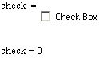

Mathsoft CheckBox Control |
The Mathsoft CheckBox control returns either a 1 or a 0 (on or off), much like the related PushButton control. More sophisticated behavior is programmed through a script using the Button class, and other features of your scripting language. Radio buttons are used to select between an arbitrarily large collection of choices.
You can change the appearance of a check box by right-clicking and choosing Properties, or, in some cases, you can access formatting properties through the script.
| Simple Annotated Example |
Here's an example that shows the default script and the resulting behavior of the CheckBox control in the worksheet.
Sub CheckBoxEvent_Start()
Rem TODO: Add your code here
End Sub
Sub CheckBoxEvent_Exec(Inputs,Outputs)
If CheckBox.check Then
Outputs(0).Value = 1
Else
Outputs(0).Value = 0
End If
End Sub
Sub CheckBoxEvent_Stop()
Rem TODO: Add your code here
End Sub
Sub CheckBox_Click()
CheckBox.Recalculate()
End Sub

In the script, notice that there are four events, Start, Exec, Stop, and Click. The Exec event is where inputs and outputs can be processed, namely returning the state of the button. In the case of check boxes, this is where state changes are handled because both check boxes and radio buttons support the Check property which delivers the state of the button. Procedures for formatting the button itself can be taken care of in the Start event or using the Properties dialog box. The Click event is where the control is re-executed after the user has changed their selection. Here's a slightly modified piece of script and its effect on the appearance and behavior of the control:
Sub CheckBoxEvent_Start()
CheckBox.Text = "Check here to enable default parameters in the worksheet."
End Sub
Sub CheckBoxEvent_Exec(Inputs,Outputs)
If CheckBox.check Then
Outputs(0).Value = 1
Outputs(1).Value = 2
Outputs(2).Value = 3
Else
Outputs(0).Value = "no value specified"
Outputs(1).Value = "no value specified"
Outputs(2).Value = "no value specified"
End If
End Sub
Sub CheckBoxEvent_Stop()
Rem TODO: Add your code here
End Sub
Sub CheckBox_Click()
CheckBox.Recalculate()
End Sub
In this script, two more output variables were added and the script in the Exec event was modified to send data out to these variables. Also, the text of the check box was changed to prompt the user to check the box.
Here is a sample file that demonstrates various uses of buttons in a worksheet.